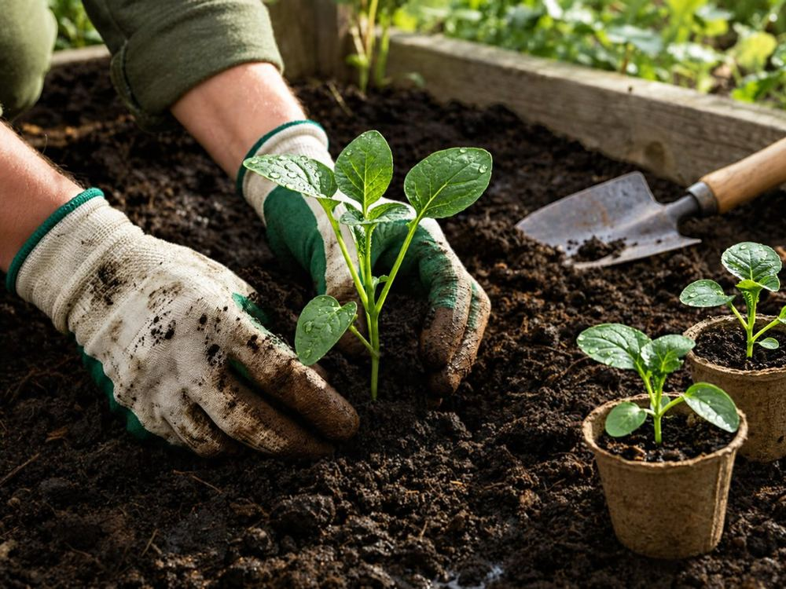
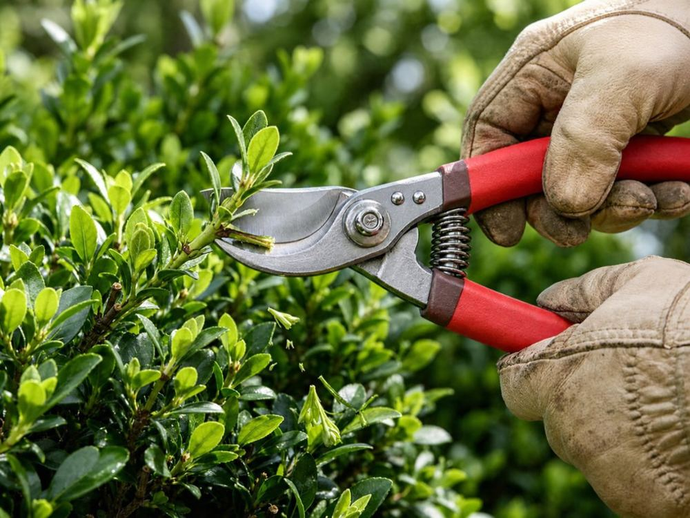
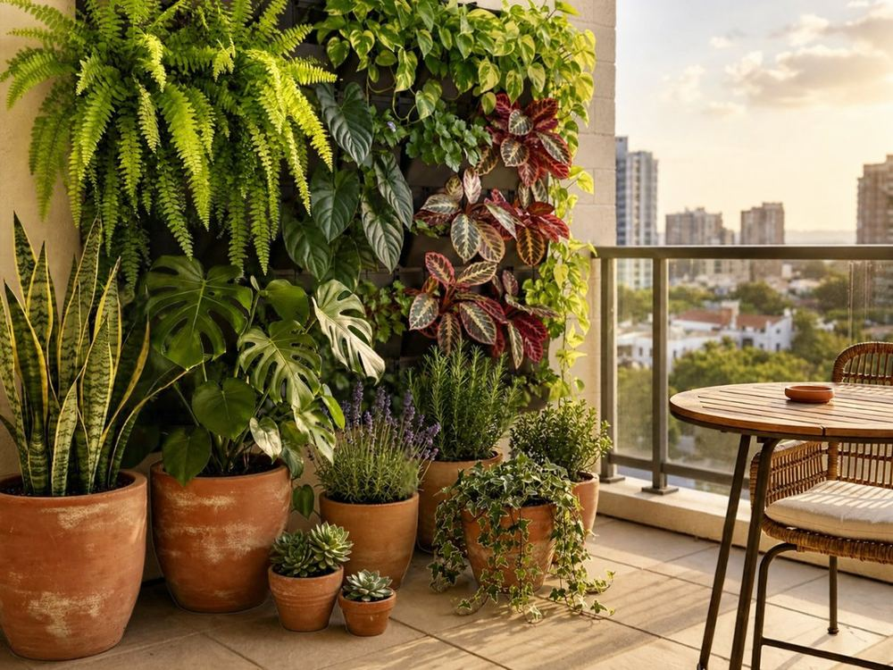

Imagem ilustrativa
Imagem ilustrativa01
Projeto paisagístico
Estudo do espaço, escolha das espécies e desenho completo do jardim, de acordo com o seu estilo.
 Imagem ilustrativa
Imagem ilustrativa
Do projeto ao cuidado do dia a dia, criamos áreas verdes bonitas, funcionais e fáceis de manter. provisório
Atendemos casas, condomínios e empresas, com soluções pensadas para cada espaço e orçamento. provisório
Imagem ilustrativaEstudo do espaço, escolha das espécies e desenho completo do jardim, de acordo com o seu estilo.

Imagem ilustrativaPreparo do solo, plantio, gramado, irrigação e acabamentos, executados com cuidado.

Imagem ilustrativaPodas, adubação, controle de pragas e visitas periódicas para o jardim estar sempre bonito.

Imagem ilustrativaVarandas, sacadas e áreas pequenas ganham vida com vasos e paredes verdes.
Um processo simples e transparente, para você saber exatamente o que esperar. provisório
Você conta pelo WhatsApp o que imagina e envia fotos do espaço.
Avaliamos luz, solo e medidas no local e entendemos a sua rotina.
Apresentamos o projeto com as espécies escolhidas e o orçamento detalhado.
Implantamos o jardim e orientamos os cuidados, com opção de manutenção.
As imagens abaixo são ilustrativas ou espaços reservados, e serão substituídas por fotos reais dos jardins da JS Paisagismo. fotos a incluir
 Imagem ilustrativa
Imagem ilustrativaAcompanhe os projetos e os bastidores no Instagram @js.paisagismo
Seguir no InstagramImagem ilustrativa · trocar por foto da responsávelA JS Paisagismo nasceu do amor pelas plantas e da vontade de transformar espaços comuns em lugares agradáveis de viver. À frente da empresa, [Nome da responsável] acompanha cada projeto de perto, da primeira conversa ao último vaso.
Nosso jeito de trabalhar é simples: ouvir o que você deseja, escolher espécies que combinem com o clima e com a sua rotina, e entregar um jardim bonito e fácil de manter.
Espaço para avaliações reais de clientes. a incluir
[Depoimento de cliente — exemplo: “O jardim ficou exatamente como eu imaginava.”]
[Depoimento de cliente — exemplo: “Atendimento atencioso do começo ao fim.”]
[Depoimento de cliente — exemplo: “A manutenção mensal faz toda a diferença.”]
Mande uma mensagem pelo WhatsApp contando um pouco sobre o seu espaço. O orçamento é sem compromisso.